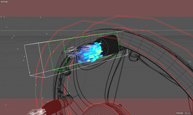

1. 主题
“作为联合国秘书长，一个拥有147个成员国，代表了几乎所有地球居民的组织，我向你们送去全人类的问候……”。1977年，人类发射了旅行者一号探测器携带者一张金唱片，旨在向“外星人”表达人类的问候。多年以后，在太空漂流了很多年的旅行者飞回了地球。然而，由于人类对地球资源的过度开发及严重污染，加上科技的发展，人类已抛弃地球前往太空寻找新家园了。
2. 镜头
- 太空中的旅行者飞行；
- 旅行者坠落；
- 旅行者内部、金唱片；
- 破败的地球城市；
- 收音机响起：“人工智能时代已经来临！只需一个机器人，你的生活质量就能无限提高！嗞嗞…… “旅行者”号已经成功发射！它将代表我们人类去寻找宇宙中的“朋友们”！嗞嗞……环境日益恶化，地球将不再适合生存！“人类移民计划”启动！嗞嗞…..”
3. 设定参考
设定参考主要来自《银翼杀手2049》、《机器人总动员》。
短片中破败的地球城市一开始的镜头就是参考的这张图，浓厚的烟雾，空荡的道路天桥，远处宏大模糊的建筑物。
这张是来自《机器总动员》，主要也是参照了上面的建筑物废墟。
4. 场景
4.1 外太空
这个场景一开始打算直接用C4D自带的渲染器渲染的，但是考虑到外太空镜头中的旅行者号有一个点火移动的特效要利用TurbulenceFD构建，所以地球部分是直接在C4D自带的渲染器渲染，然后采取同样的方式对旅行者号进行打光，利用octane渲染为alpha图层。最后在Pr合成这个场景。

- 地球模型由表面球体、云层、大气层构成；
- 背景星空由天空贴图与噪波贴图组成。
4.2 外太空的旅行者号（oc渲染）

因为这是一个外太空场景，所以通常的火焰效果在这里不适用（有燃烧后的烟），反复模拟后最终实现一个太空飞船的尾焰的效果。
- 旅行者的喷射效果使用TurbulenceFD粒子插件构建，并使用【发射器】完成粒子的发射效果。
4.3 废弃的城市
这个场景花了比较长的时间去完成，在一开始使用烟雾觉得不够真实，在看了一个教程后转用物理天空进行模拟。为了实现厚重的烟雾效果，在场景的左上方进行补光。
参考了《银翼杀手2049》，将一些大型乌托邦风格建筑放在光线的前方，形成若隐若现的感觉。
- 废弃的城市场景比较庞大，部分建筑模型来自模型库；将不同的建筑组合到一起，并构建了路面、高架桥、废弃汽车、路标等完成场景的搭建；
- 人行道和公路一开始为了渲染的工作量就用了纹理贴图，但纹理贴图在镜头拉近时地面就会显得不够真实，于是加了法线贴图来制造凹凸不平的地面；

- 路面、广告牌及路标使用颜色纹理贴图；
- 利用Cinema4D的物理天空打造沙尘暴效果，提高摄像机焦距并另外使用聚光灯使烟雾效果更明显；
4.4 旅行者坠落（oc渲染）
4.5 旅行者内部(oc渲染)
这个场景的另一个同学做的，也是用了oc渲染。

4.6 荒废城市外
这个放在片尾，当作是一个彩蛋对短片的设定进行补充。
一开始的预想是放一台收音机，在实践后感觉收音机与场景的匹配度不高，所以换成了一台电报机。
5. 后期处理
后期基本上都是在Pr完成的，在风格的处理上用到了几个滤镜：
- SL CLEAN FUJI A NDR
- SL CLEAN FUJI A HDR
- SL CLEAN KODAK A HDR
- SL CLEAN KODAK B ULTRASOFT
字幕制作强推Arctime！人性化的操作，比Pr的字幕制作好用多了。
6. 总结
整个短片从一开始到最后的完成还是有一些不足的地方。
- 废弃的城市最后渲染出来发现了阴影的问题，最后检查是因为补光的灯光没有关闭阴影，所以与物理天空中的阳光的阴影产生了冲突。（但是因为没有时间再重新渲染一遍了(T_T)）
- 荒废成实外的电报机场景烟雾存在问题，烟雾中的波状涡流，高度和动画速率都没有调好，导致渲染出来烟雾比较奇怪。
- 由于渲染时间要花比较久（主要是配置不行），自带的渲染器渲染中都没有打开全局光照和环境光屏蔽，Octane渲染的采样率就开了400，所以效果也不是很好。例如废弃的城市就出现了黑的地方太黑，旅行者坠落场景出现了噪点。